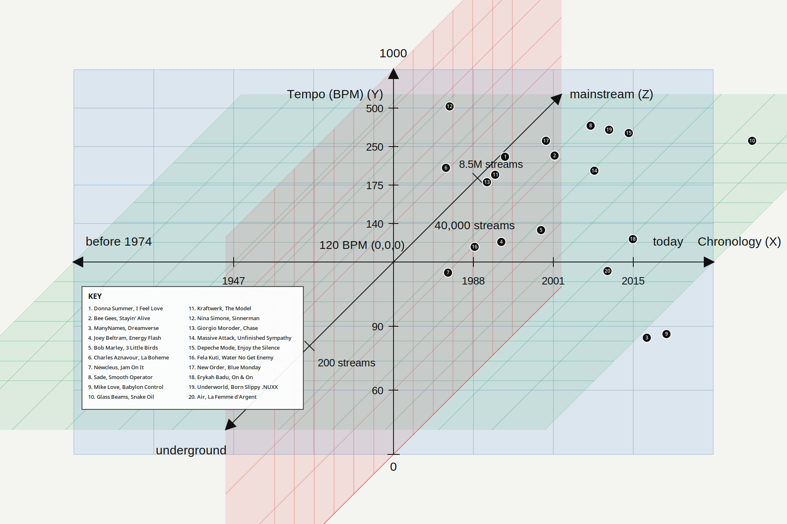

Every recorded song is one point in a 3D landscape you fly through and listen to. Songs move daily and leave glowing trails. X is chronology (days from July 6, 1974). Y is tempo (BPM, origin 120). Z is popularity, mainstream to underground, era-normalized; Z=0 is about 40,000 streams a year.
The guess is the unit of the map. Each track is placed in a cascade, one axis at a time: chronology, then tempo, then culture. Every day the map recomputes, and the trails are the record of it learning.
